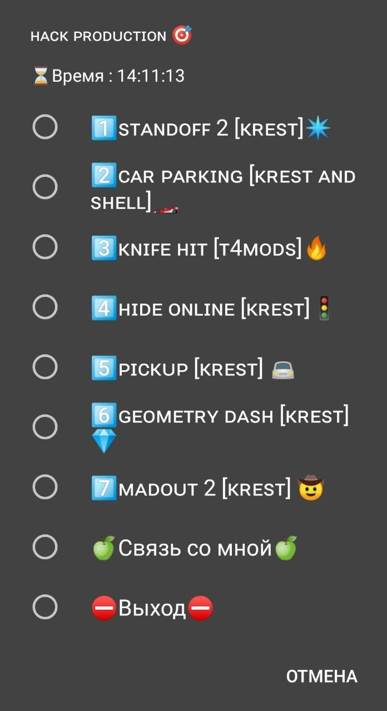

Привет!
Ты попал на сайт HackProd
Если у тебя возникли проблемы с скриптом, напиши в поддержку
HackProd
Версия скрипта 1.0 Rebuild

1. Standoff 2 - Есть скинченджер, анти отдача,чёрные руки, банни хоп и много чего ещё. Аим в разработке
2.Car parking - 4.9 Беспланые донатные машины
3.Knife hit - невидимое дерево, бессмертие, Ножи вокруг
4.Hide Online - fov, анти-отдача, бессмертие, анти-насмешка и.т.д
5.PickUP - много денег,спид хак, wall Hack and wall see
6.Geometry dash - быстрое прохождение, высокий прыжок и.т.д
7.Madout 2 - много денег, алмазов, взлом магазина, free charapters
8.Granny - Спид-хак (гренни не ускоряеться), взять предмет который далеко, гренни вас игнорирует
9.Minecraft - Буст в прыжке, бесконечные блоки, бесконечное хп, бесконечный голод